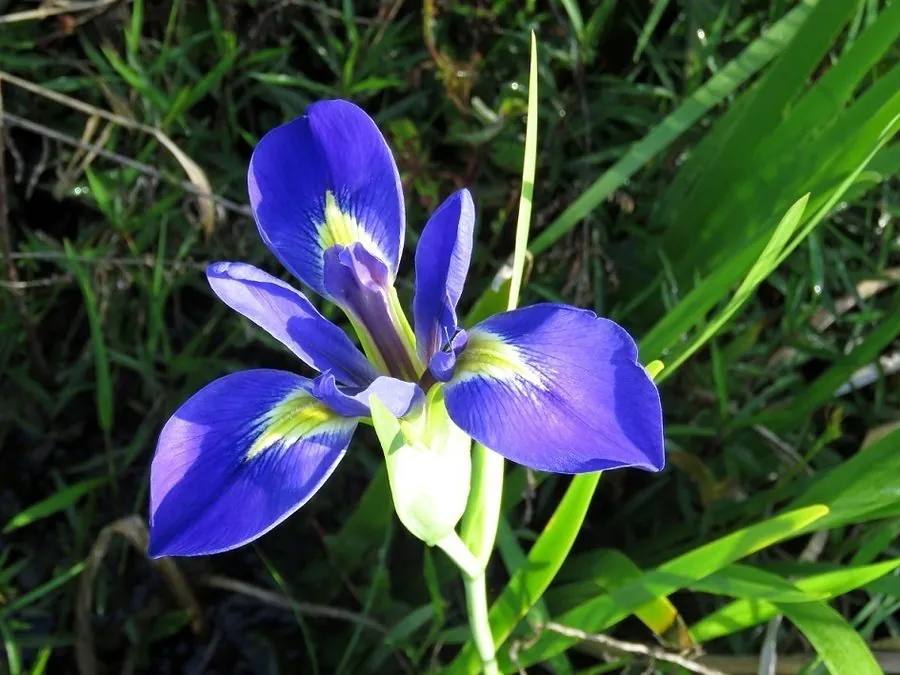

水生植物 · 植物界
路易斯安那鸢尾 Iris louisiana

鸢尾科多年生湿生草本，由多种北美鸢尾杂交而成的园艺类群，花大色艳、花期长，是水景园与湿生花境的明星。
- 分类
- 门被子植物门纲木兰纲目天门冬目科鸢尾科属鸢尾属
- 栖息环境
- 沼泽、湿地与池畔浅水，喜阳光充足、土壤常年湿润
- 地理分布
- 园艺杂交类群，源自美国南部沼泽，中国各地水景园引种栽培
- 保护级别
- 暂无评估；为人工选育的园艺类群
物种志
路易斯安那鸢尾为鸢尾科鸢尾属多年生湿生草本，由六角果鸢尾、铜色鸢尾等北美原产种类杂交选育而成，是一个园艺类群而非单一野生种。根状茎粗壮，株高 0.6–1.2 米。叶片剑形，直立，长 50–80 厘米。花葶直立，着花 3–7 朵，花径 10–15 厘米，有蓝、紫、粉、白、黄及复色，花瓣具皱边与斑纹，花期 5–7 月。
该品种群源自美国南部路易斯安那州及得克萨斯州的沼泽与湿地，喜阳光充足、土壤长期湿润的环境，可耐水深 10–15 厘米的浅水，冬季根状茎可耐短期低温。它花色丰富、花形平展，适合布置水景园、湿生花境与池畔，也是优秀的切花材料。栽培以分株为主，每 3–4 年分栽一次，花后剪除残花可促进复壮。
形态与习性
- 株高0.6–1.2 米，叶片剑形直立
- 水深可耐 10–15 厘米浅水，也可生于湿土
- 水质喜中性至微酸性软水，忌盐碱与积水腐臭
- 花期5–7 月，单葶着花 3–7 朵
- 光照全日照，光照不足则花少色淡
- 繁殖根状茎分株，每 3–4 年分栽一次
趣味知识
- 路易斯安那鸢尾不是单一物种，而是以数种北美鸢尾为亲本杂交形成的园艺品种群，已登记品种数以千计。
- 它的花瓣常带皱边、斑纹与“信号斑”，是鸢尾育种中花色最丰富的类群之一。
- 根状茎可耐水淹，但长期浸泡在腐臭死水中易腐烂，因此水景园中需保持水体流动。
- 美国路易斯安那州将其视为湿地园艺的象征，当地每年举办鸢尾花展。